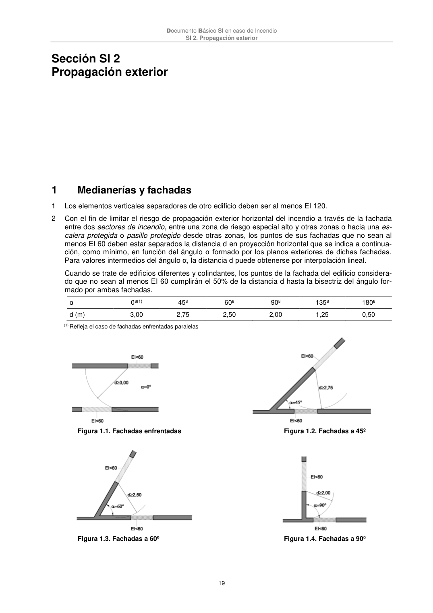

DB-SI Seguridad en caso de incendio · edición 2025-03-04 · capa oficial
Documento DB-SI-oficial · SHA-256 del PDF 0a2e78cd62471d9cc5cfe2efbc6aa39fdbad73c124aea7b039f9de96c141e105
Página física 19 de 92.
Copia fiel del PDF fuente · Fuente oficial
Ficha de la disposición en la fuente oficial
Formato: Texto de la página (Markdown)
Documento Básico SI en caso de Incendio SI 2. Propagación exterior 19 Sección SI 2 Propagación exterior 1 Medianerías y fachadas 1 Los elementos verticales separadores de otro edificio deben ser al menos EI 120. 2 Con el fin de limitar el riesgo de propagación exterior horizontal del incendio a través de la fachada entre dos sectores de incendio, entre una zona de riesgo especial alto y otras zonas o hacia una es- calera protegida o pasillo protegido desde otras zonas, los puntos de sus fachadas que no sean al menos EI 60 deben estar separados la distancia d en proyección horizontal que se indica a continua- ción, como mínimo, en función del ángulo α formado por los planos exteriores de dichas fachadas. Para valores intermedios del ángulo α, la distancia d puede obtenerse por interpolación lineal. Cuando se trate de edificios diferentes y colindantes, los puntos de la fachada del edificio considera- do que no sean al menos EI 60 cumplirán el 50% de la distancia d hasta la bisectriz del ángulo for- mado por ambas fachadas. α 0º(1) 45º 60º 90º 135º 180º d (m) 3,00 2,75 2,50 2,00 1,25 0,50 (1) Refleja el caso de fachadas enfrentadas paralelas Figura 1.1. Fachadas enfrentadas Figura 1.2. Fachadas a 45º Figura 1.3. Fachadas a 60º Figura 1.4. Fachadas a 90º
